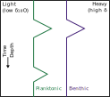

Paleoclimate:
Tools & Techniques
Week
GEOS 3410
Week Schedule
Tuesday
- Rock, sediment records
- Chemical records: isotopes
Thursday
- Paleoclimate reconstructions from isotopic records
Outside of class
- Week reading (see syllabus)
- Paleoclimate practice
- Term paper outline [Nov. 1]
Sediments & sedimentary rocks
Sedimentary rock types record the environments they formed in
What do these rocks tell us about the climates they formed in?
Ripple marks
This environment likely flooded at least intermittently
Mudcracks
This climate was likely arid and likely dried intermittently
Alluvial Fans
Mountainous region, high weathering rates


Coral reef terrace
Falling sea level (or uplift)

What do the rocks tell us?
Sandstone
Terestrial: Arid, desert environment
Marine: coastal, sea level rise/fall.
Marine: coastal, sea level rise/fall.

Limestone
Active silicate weathering, CO2 drawdown

Coal seam
Warm, swampy environment — carbon sequestration

R. Bair
Oil shale
productive marine environment (biological pump!)

Evaporites
Drying climate, falling sea level
| Most soluble |
|---|
| Chlorides (halite) |
| Sulfates (gypsum) |
| Carbonates (calcite) |
| Least soluble |
.jpg)
Evidence of glaciers


Evidence of glaciers
| Tillite | lithified till |
|---|---|
| Till | unsorted glacial sediments |

G.H. Edwards
Cold water minerals, e.g. ikaite


Lakes
Strand lines


Varves
Annual layers of sedimentation, associated with lakes that freeze in winter.

Varve formation

What might we learn from varves?

What don't rocks tell us?
Reconstructing climate from isotopes
Reconstructing climate from isotopes
Isotopes: Same element, different masses (neutrons)


Reconstructing climate from isotopes
Isotope fractionation records information!| Type | Fractionate by... | Used for... |
|---|---|---|
| Radiogenic | Radioactive decay | Measuring time |
| Cosmogenic | High energy particles | Measuring time |
| Stable | Environmental conditions | Climate proxy |
⚛️ Radiogenic Isotopes ⚛️
Geochronology
Radioactive Decay
Alpha

α = 4He nucleus
Beta

β− = e− (an electron)
Gamma

photon with λ in γ
Radioactive Decay
$$\frac{dN}{dt} = -\lambda N$$
$$N = N_o e^{-\lambda t}$$
$$n = N(e^{\lambda t} -1)$$
Decay constant (λ) & Half-life (t1/2) \[\begin{aligned} t_{1/2} &= \frac{ln(2)}{\lambda} \\\\ \lambda &= \frac{ln(2)}{t_{1/2}}\end{aligned}\]
Radioactive Decay

Radioactive Decay
Cosmogenic Isotopes
Cosmic "rays"

STAR Detector, Relativistic Hadron Collider (BNL)
Cosmic "rays"

"Spallation"

Note: this diagram depicts the spallation that occurs in nuclear reactors.
Radiocarbon (14C)
$ n~+~^{14}_7\text{N}~\rightarrow~^{14}_6\text{C} + p$
$^{14}_6\text{C} ~\rightarrow~ ~^{14}_7\text{N} +e^- + \bar{\nu}_e$
$t_{1/2} = 5730~yr$
$^{14}_6\text{C} ~\rightarrow~ ~^{14}_7\text{N} +e^- + \bar{\nu}_e$
$t_{1/2} = 5730~yr$
Radiocarbon decays over time…

$N=N_o e^{-\lambda t}$
How can we calibrate past atmospheric 14C?
How can we calibrate past atmospheric 14C?

üå≤üå≥ Dendrochronology üå≥üå≤
14C production & the solar cycle
More rays, more radiocarbon!Modern radiocarbon chronology depends on 14C-production calibrations

IntCal20 calibration curve
Speleothems
CaCO3


⚛️ Stable isotopes ⚛️
⚛️ Stable isotopes ⚛️
← black squares
… do not decay (measurably)
Delta (δ) notation
\[\begin{aligned} \delta &= 1000\times \frac{R_{sample} - R_{standard}}{R_{standard}} \\\\ \delta & = 1000\times \left(\frac{R_{}}{R_{standard}}-1\right) \end{aligned}\]
in
per mille(‰) = per thousand
Stable isotope fractionation
← Equilibrium →
- Reversible
- Forward/backward reactions allow
equilibrium
over time. - Relies on only energy in system
- Closed, stable system.
→ Kinetic →
- Irreversible
- Unidirectional
- Depends on energy in system, reaction rate, transport, catalysts
- Open, unstable systems
For example…?
Stable isotopes of oxygen

Stable oxygen isotopes
$^{16}\text{O}$
99.76%
$^{17}\text{O}$

0.04%
$^{18}\text{O}$

0.2%
Stable oxygen isotopes
dell-oh eighteen
Vienna Standard Mean Ocean Water (VSMOW)
$\frac{^{18}\text{O}}{^{16}\text{O}} = 0.00200520 \pm 0.00000045 $δ18O composition of the oceans
δ18O composition of precipitation
Global meteoric water line
Fractionation by evaporation & condensation
Fractionation by evaporation
- Evaporation: equilibrium or kinetic?
- Condensation: equilibrium or kinetic?
- What happens to the ocean?
Fractionation by evaporation
Fractionation by evaporation
- ↑ ice → ↑ δ18O
- ↓ ice → ↓ δ18O
Reconstructing ice mass from ocean compositions

How do we reconstruct seawater?
Foraminifera
Shell (test) made of CaCO3

Image credit: Cait Livesy
Ocean carbonate system

CO2 readily exchanges between water and atmosphere
Ocean carbonate system
\[\begin{aligned} \text{H}_2\text{O} + \text{CO}~_{2~(aq)} ~&\longleftrightarrow~ \text{H}_2\text{CO}_3 \\\\ \text{H}_2\text{CO}_3 ~&\longleftrightarrow~ \text{H}^{+} + \text{H}\text{CO}_3^- \\\\ \text{H}^{+} + \text{H}\text{CO}_3^- ~&\longleftrightarrow~ 2~\text{H}^{+} + \text{CO}_3^{2-} \\\\ (\text{H}_2\text{O} ~ &\longleftrightarrow ~ \text{H}^+ + \text{OH}^-) \end{aligned}\]
$\text{Ca}^{2+} + \text{CO}_3^{2-} \longrightarrow \text{CaCO}_3$
A new standard appears!
ü¶ë VPDB (Vienna Pee Dee Belemnite) ü¶ë
\[\begin{aligned} \delta^{18}\text{O}_{\text{VSMOW}}= 1.03091 \times \delta^{18}\text{O}_{\text{VPDB}} + 30.91 (‰) \end{aligned}\] rock ↔ water(You don't need to know the equation, just that it exists)
What does this tell us about how carbonate formation affects O isotopes?
Temperature-dependent oxygen isotope fractionation
δ18O gets more positive (↑) as water cools.
Temperature & reservoir effects
| δ18O | Temp. | Ice extent |
|---|---|---|
| ↑ (heavier) | ↓ (cooler) | ↑ (more) |
| ↓ (lighter) | ↑ (warmer) | ↓ (less) |
Benthic vs. planktic records
Sediment core δ18O

Bonus semi-quantitative climate proxies
Dendrochronology
Sclerochronology
Growth of hard tissues…

Fossils
Quercus virginiana
(Southern live oak)
Hot summers, mild winters
(Southern live oak)
Hot summers, mild winters
Abies balsamea
(Balsam fir)
Mild summers, cold winters
(Balsam fir)
Mild summers, cold winters
Going up-sequence in a lake sediment core, you see fewer oak fossils and more fir fossils. What happened?
Fossils
Palynology: identifying pollen species. Plant species at a given time reflect the environment at that time.

Fossils
Chironomid (non-biting midges) species live in narrow ranges of temperature, altitude, and water pH.

Plant & microbe carbon-chain molecules (lipids, alkanes, etc…)

{kind=link}
{kind=link}
{kind=link}
{kind=link}
{kind=link}
{kind=link}
{kind=link}
{kind=link}
{kind=link}
{kind=link}
Molecular structure varies with environmental conditions (temperature, moisture, …)

Why is life so good at recording climate change?
(hint: nutrients & energy)
Next Week ()
- Week reading (Canvas)
- Tuesday: The cryosphere
- Thursday: The cryosphere records climate
- Paleoclimate practice
- Term paper outline [Nov. 1]